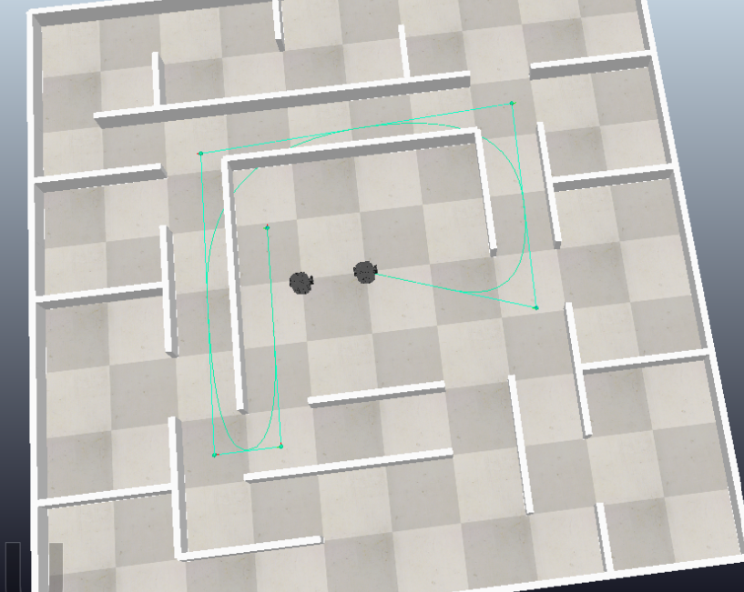

🦾 Key Projects
1. UR10e Robotic Arm: Pick & Place Industrial Cell
Designed and programmed an automated industrial cell. I used Onshape to model and 3D-print custom mechanical grippers and fixtures to sort and place components in different layouts.

2. Multi-Robot Relay Race Simulation (ROS2 & CoppeliaSim)
Project Overview
Developed and simulated a cooperative relay race between two autonomous mobile robots using the Turtlebot3 model. The system implements a coordination architecture where one robot finishes a trajectory and triggers the second robot to continue autonomously.
Key Technical Contributions
-
Path Tracking Control:
Implemented Pure Pursuit trajectory control using
cmd_velandodom. -
Multi-Robot Architecture:
Designed isolated ROS2 namespaces
(
/robot1and/robot2) to avoid topic collisions. -
Coordination Logic:
Integrated a custom
relay_managernode for synchronization between robots. - Waypoint System: Created a dynamic waypoint publisher using YAML configurations.
System Architecture Graph
The graph below shows the ROS2 nodes, topics, remappings, and communication pipeline used for multi-robot synchronization.

3. "Through the Door" - AR Measurement App
Mobile application developed during my semester at HvA (Amsterdam) inside the Social Impact Apps studio, focusing on clean UI design and agile workflows.